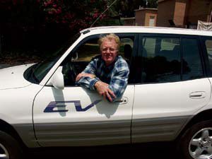

BILL MOORE
Today, advanced, more powerful lithium-ion batteries are being developed that allow electric and gas/electric hybrid cars, such as the modified Toyota Prius, to significantly increase their performance and range.